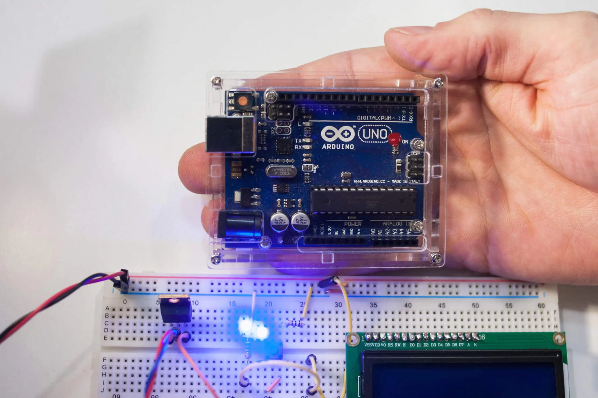

Arduino é uma plataforma que possibilita o desenvolvimento de projetos eletrônicos. Em outras palavras, é uma plataforma de prototipagem eletrônica. O Arduino é constituído de hardware e software, tornando assim possível a realização de diversos projetos tecnológicos. ele serve para muito mais coisas como por exemplo a automação residencial para controle de iluminação, temperatura e segurança.Robótica, tanto para competições como para projetos educacionais. Desenvolvimento de dispositivos IoT para monitoramento e controle remoto. Eletrônica vestível, como roupas inteligentes e monitores de saúde. Instrumentação e monitoramento ambiental em tempo real. Automação industrial para controle de processos e máquinas. Educação, usando o Arduino para ensinar eletrônica e programação de forma prática. Arte interativa em instalações e exposições. Instrumentação científica para medição e experimentação. Projetos de hobby, como jogos eletrônicos e instrumentos musicais caseiros.
Aplicações
